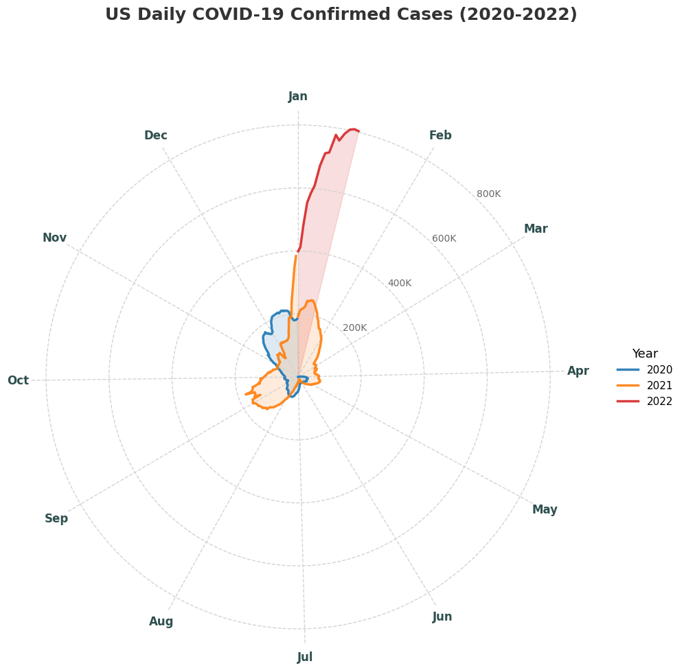

Reading & Critique

Insights about the data/visualization:
- The spiral arrangment allows us to easily identify seasonal patterns (peaks in the winter and troughs in the summer).
- The "wide lip" at the top of the spiral in January 2022 looks like it's going to spill over into the previous layer, emphasizing how numerous the Omicron wave was compared to all prior variants.
- The shape is also very continuous and organic, with time flowing through the years without any clear transition, allowing us to see the progression of COVID-19 without distraction from human concepts like years.
- We can notice waves of the virus, but it's difficult to identify the specific one without background knowledge (e.g. knowing Delta was spring/summer 2021).
Design Critique:
The spiral chart makes several effective design choices that serve its
publication context well. The polar coordinate form elegantly encodes
the cyclical nature of pandemic waves — the shape itself evokes
seasonality and the ebb and flow of the virus in a way a standard line
chart cannot, and draws upon a powerful cognitive metaphor to deliver
a specific message. Crucially, this design was published alongside an
opinion article specifically about the Omicron wave, and the chart
excels at achieving that narrow goal: the trumpet-like opening of the
spiral naturally draws the eye outward toward Omicron's surge, making
the key takeaway — that this wave dwarfs everything before it —
viscerally immediate. Despite being a non-standard chart type, the
inclusion of a scale and month labels makes it surprisingly intuitive
for a general audience already saturated with COVID data. Its almost
hand-drawn quality also helps it stand out among the bar charts and
line graphs that dominated pandemic coverage.
However, the design struggles when readers try to move beyond the
headline message. The polar encoding distorts area: because case
counts are encoded as radial distance, outer rings appear
proportionally larger in area than inner ones, making 2021 visually
overwhelming relative to 2020 even though both represent the same time
span. This makes accurate year-over-year comparison difficult. There
are also no labeled annotations distinguishing named variants (Alpha,
Delta, Omicron), which means readers cannot easily locate or compare
the "launching point" and width of earlier waves against Omicron's.
Finally, the chart offers no clear reading direction — without the
surrounding article, it's ambiguous whether one reads from the center
outward or follows the spiral chronologically — which increases
cognitive load. These limitations suggest the design is highly
optimized for one specific message in one specific context, but would
benefit from wave-era labels if it were meant to also support more
granular comparison.
Visualization Sketches

Design Rationale for Sketch 1:
- Motivation: Given the context of the opinion piece, it seemed like a key point that the original spiral failed to make was explicit baselines for the other waves that Omicron was being compared to. There was also an unclear reading direction, which could lead to the audience getting lost in the chart. I wanted to fix these while preserving as much of the original design's power as possible.
- What it hopes to communicate: The same Omicron-dominance message as the original, but with the pandemic's temporal dimension made explicit first. By "unwinding" the spiral into a linear scroll before revealing the coiled form, readers build chronological context before the seasonal comparison is introduced. Also, the labelling of wave eras allows for comparison of the "launching point" and width of earlier waves against Omicron's.
- Design Choices: I decided to use a linear scroll to represent the temporal dimension first, and then use the spiral to represent the seasonal dimension. I also added labels to the scroll to indicate the year and month, and the spiral to indicate the variant.
- What worked well: Adding Alpha, Delta, and Omicron annotations as labeled shaded bands directly addresses the comparison problem from the critique; the two-stage reveal preserves the original's dramatic payoff without the cold-start confusion.
- What didn't work well: The interactive/animated component is difficult to realize as a static final design, and the spiral's area distortion problem (outer rings appearing proportionally larger) is still present in the final coiled panel as the encoding itself is unchanged.
- What to explore next: A design that abandons polar coordinates entirely, to test whether a more conventional encoding can preserve the seasonal story without the distortion and legibility tradeoffs inherent to the spiral form.

Design Rationale for Sketch 2:
- Motivation: I wanted to experiment with a completely new shape without the polar coordinates and spiral form.
- What it hopes to communicate: Year-over-year seasonal patterns but expressed in a more conventional format, making it more effective to read and compare. Using the size dimension makes it easier to immediately visualize the overarching trends compared to discerning fluctuations in area within the spiral.
- What worked well: More intuitive encoding, leveraging size, with unambiguous reading direction and clearly separated year boundaries.
- What didn't work: the bubbles are less precise than position, so it's more difficult to have granular quantification of specific data (although not a major issue for the purposes of this visualization, which serves as more of a visual aid for the op-ed than an intensive report on individual data points). We also lose the metaphor of the spiral, as well as the shock value of the original design.
- What to explore next: A design that combines the intuitive encoding of the heat map with the best parts of the original spiral, such as a design that uses a combination of color and position to encode the data.

Design Rationale for Sketch 3:
- Motivation: Sketches 1 and 2 each gave up something important — sketch 1 kept the spiral's distortion, while sketch 2 lost the cyclical/emotional resonance. Could a polar line chart with three colored overlaid traces get the best of both worlds?
- What it hopes to communicate: How the shape and scale of each year's wave pattern compares across 2020, 2021, and 2022, with months on the perimeter so seasonal patterns are immediately readable, without the confusion of the spiral's distortion.
- What worked well: Rather than spiraling through the years, we more explicitly overlay the years on top of each other to build the seasonal comparison story the original spiral was trying to get at.
- What didn't work: We still lose the metaphor of the spiral, and get back a bit of the confusion as to where to begin reading the visualization.
Final Visualization Design

Final Writeup
This visualization consists of an overlaid polar line chart depicting the daily new cases of COVID in the United States from Feb. 2020 to mid-January 2022. From a cursory glance, the central message is immediately clear: the Omicron wave in January 2022 was categorically larger than any prior COVID-19 wave in the country. The polar form was chosen to preserve the seasonality of the original spiral visualization, without the distortion and cognitive load of the original. By placing months at fixed angular positions around the circumference, the audience is able to quickly identify year-over-year comparisons. Hue encodes year, with the 2022 line rendered thicker adn at full opacity, adoppting the alarming red color of the original to direct attention towards the Omicron peak. Lines are used to plot daily new cases, which avoids the usual problems with radial plots that use area. The radial scale is labeled in absolute case counts, giving the audience a concrete quantitative reference.
The critique-by-redesign process allowed me to take a deeply reflective and iterative look at the original design. I was able to understand the strengths and weaknesses of each sketch, weighing the pros and cons of each trade-off in order to gradient descent towarads a visualization that would be best suited for the context of the op-ed. It was interesting to experiment with different shapes (e.g. the heatmap) because although I initially had qualms with the spiral form, I quickly came to understand the appeal of the circular nature and its presentation, and was able to circle back on that in my final sketch design. There were certain critiques that I had early on (e.g. labelling the variant waves) but making the iterative designs allowed me to test out these hypotheses and understand which ones were actually worth implementing.